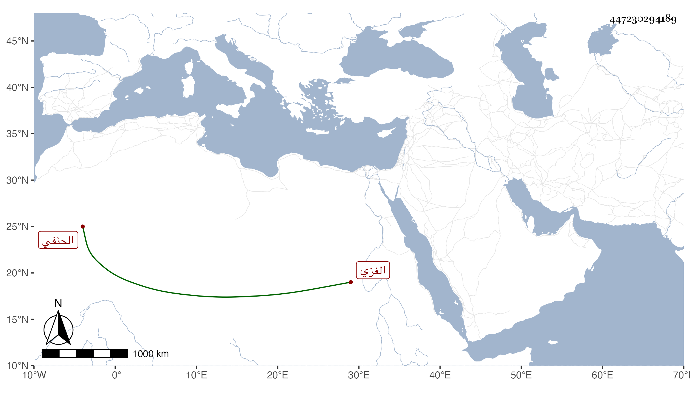

0902Sakhawi.DawLamic.ITO20230111-ara1.EIS1600.447230294189
Biography ID: 447230294189
276
عمر بن الحسين بن بوبان بموحدتين أولاهما مضمومة وآخره نون الغزي الحنفي . ولي قضاء بلده في سنة ثمان وخمسين بعد صرف ابن عمر فدام دون سنة ثم أعيد وكذا وليه مرة أخرى ، ومن شيوخه ناصر الدين الإياسي . وهو في سنة تسعين حي جاز الستين .
